It’s been two years since my original post on setting up Nextflow with AWS Batch. While there have been many exciting developments in Nextflow, that old post has held up surprisingly well. But there’s been one big change that drove me to update my setup (and this post): the new Fusion file storage system developed by Seqera Labs.
In my previous setups, I used EBS autoscaling for storage in my containerised workflows. It worked well, but EBS is expensive, and AWS recently announced they’d no longer support EBS autoscaling. It still works, but for how long…? A little bit before this Seqera Labs (the people behind Nextflow) released Fusion, a system that lets your containers use S3 as though it’s local storage.
I’m not going to go into the details here of how fusion works, you can check it out on their website but essentially is it allows your containers to use S3 as the file storage system as if it was the local disk. In short, much cheaper storage associated compute costs and no more complex EBS autoscaling setups.
To use Fusion, you’ll need to run your containers with Wave 🌊, another fantastic tool from Seqera Labs. Wave essentially adds the fusion layer to your containers, giving them get pseudo direct access to S3 storage as though it’s a local disk. All it takes is a config update and an additional IAM permission.
Note: Wave and Fusion, require Nextflow v22.10.0 or later. Update Nextflow if you haven’t already:
nextflow self-updateI thought I would take this opportunity to refresh the whole setup guide, and also include a nice little test pipeline to check fusion is working.
If you have already setup Nextflow on AWS following my original blog post, all you should need to do is:
Add the new IAM policy permission (see IAM Setup 👤, step 14).
Recreate your Nextflow AMI if you were previously using EBS autoscaling.
Update your Batch compute environment and queues with the new AMI.
Update Nextflow on your EC2 launchpad instance.
Update your Nextflow config and run a test (see Fusion storage 💾 section).
TipTo be honest though I think its easier to just set it up all again, rather than going through and working out what you need to update, here, there, and everywhere 🎸
So lets get started 🟢
Although Gandalf 🧙 trims his beard more often than Amazon dramatically updates their AWS user interface, I cannot guarantee the included menu screenshots will look the same on your system. However, hopefully they will still provide sufficient information to determine the appropriate settings and options ⚙️ Reach out if you feel I need to update this guide.
IAM Setup 👤
Firstly, you need to create a new IAM user with more appropriate permissions tailored to the requirements listed in Nextflow documentation. It is strongly recommended that do not use your root account to run Nextflow pipelines ⚠️
Open the IAM management console on AWS and under Users click Create User.
Enter a name (e.g., “Nextflow-demo”) and leave “Provide access to AWS Management Console” unchecked, then click Next.
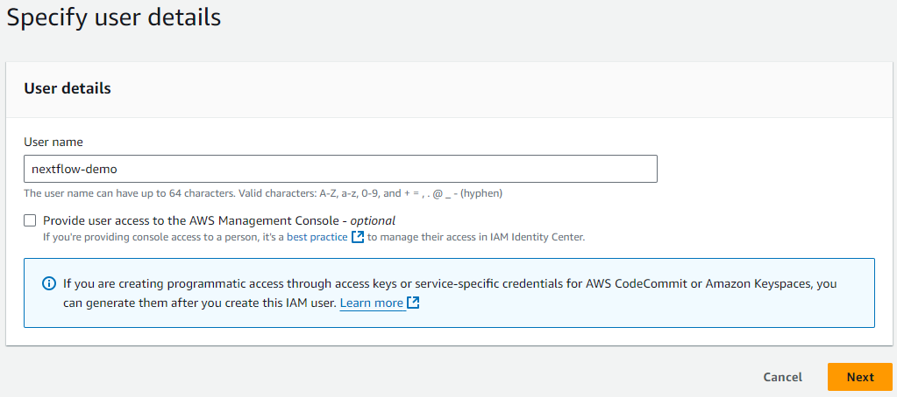
No need to add the user to a group (we will do that soon), click Next again, and then finally click Create user.
Now under the Users menu, click on your newly created user and then click the Security credentials menu/tab.
Scroll down and click Create access key under the Access keys section.
Select Command Line Interface (CLI) as the Use case and click Next and Create access key.
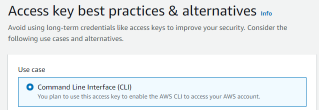
You should be greeted with a new page that includes a Access Key ID 🔑 and SCA (📝 take note of these keys as you will need them towards the end of this guide).
Next you need to create a user group for the new user to sit within. Generally, on AWS you will apply permissions to a user group rather than a specific user. Additionally, this allows you to set up multiple separate people within the ‘Nextflow group’.
Back under the IAM console select User groups and then Create group.
Enter an appropriate name and under Add users to the group menu tick your recently created Nextflow user. Click Create group.
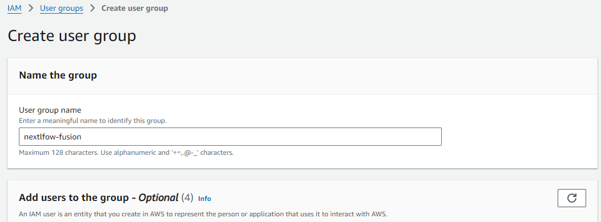
Now click/open you newly created group and under the Permissions menu/tab click the drop down Add permissions button and select click create inline policy.
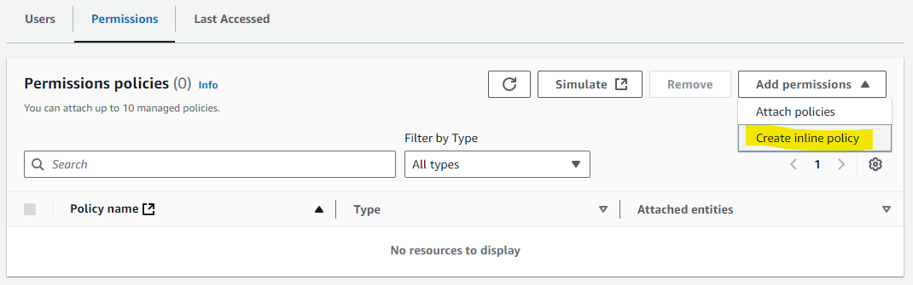
This is where you need to add the IAM policies listed in the Nextflow documentation. For all the Batch policies (batch:###) select Batch in the service menu and then find the permission policies under the actions allowed menus. For example “batch:CancelJob”
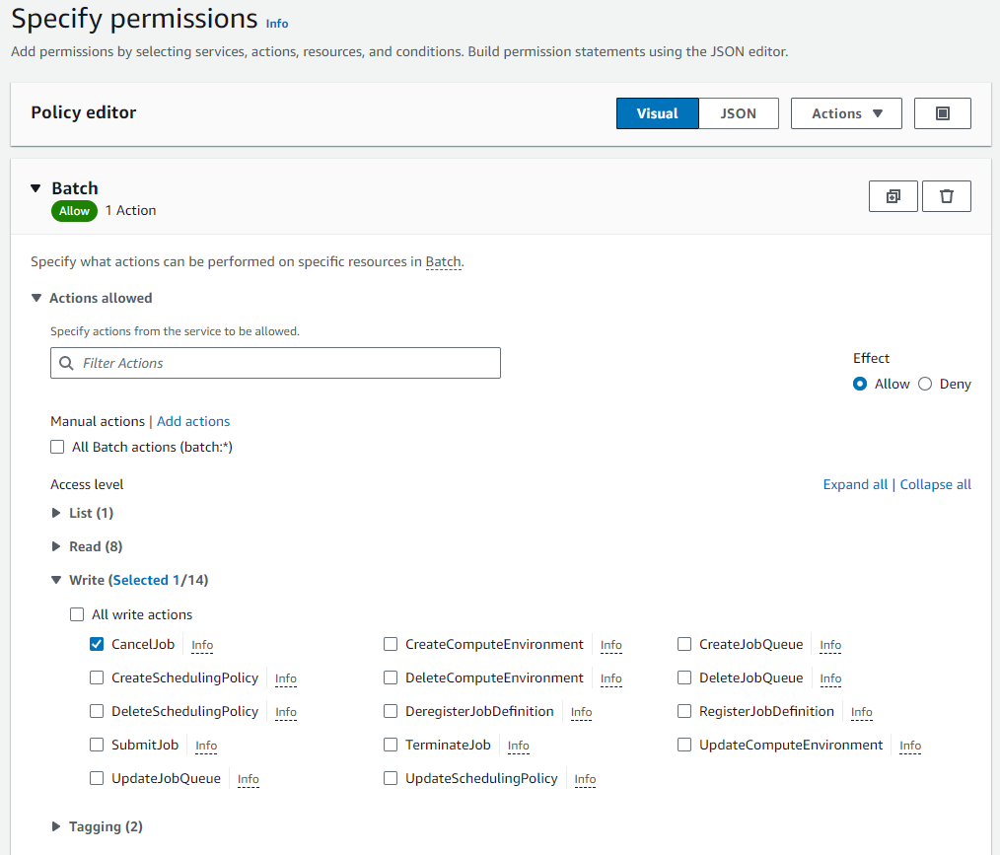
“ec2:###” policies are under service EC2, “ecs:###” policies are under Elastic Container Service, “ecr:###” policies are under Elastic Container Registry.
WarningThe policies listed in the Nextflow documentation are a bit muddled and not in order, so look closely 👀 for those ecs policies in amongst the ec2 policies.
Work you way through adding all the individual policies (alternatively you can add them via the JSON editor instead of the visual editor).
ImportantThe Nextflow documentation misses one policy that is required for wave/fusion,
batch:TagResource. So make sure you also add that one or else you will get an access is not authorized error 🛑 when you try to use fusion later on.Then finally you will need to add an S3 policy to grant all access, so that Nextlflow can pull input data and publish results, tick the All S3 actions (s3:*) checkbox, and select All under Resources.
To be able to use spot instances (which I highly recommended you consider 👍) you will need to create an additional role.
Click Roles under the IAM access management menu and click Create role.
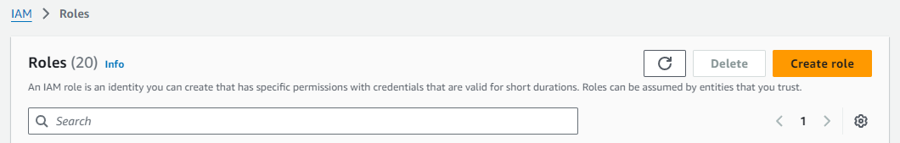
Under Trusted entity type select AWS service. Then under Use case select EC2 as the service or use case, and then select EC2 - Spot Fleet Tagging, and finally click Next.
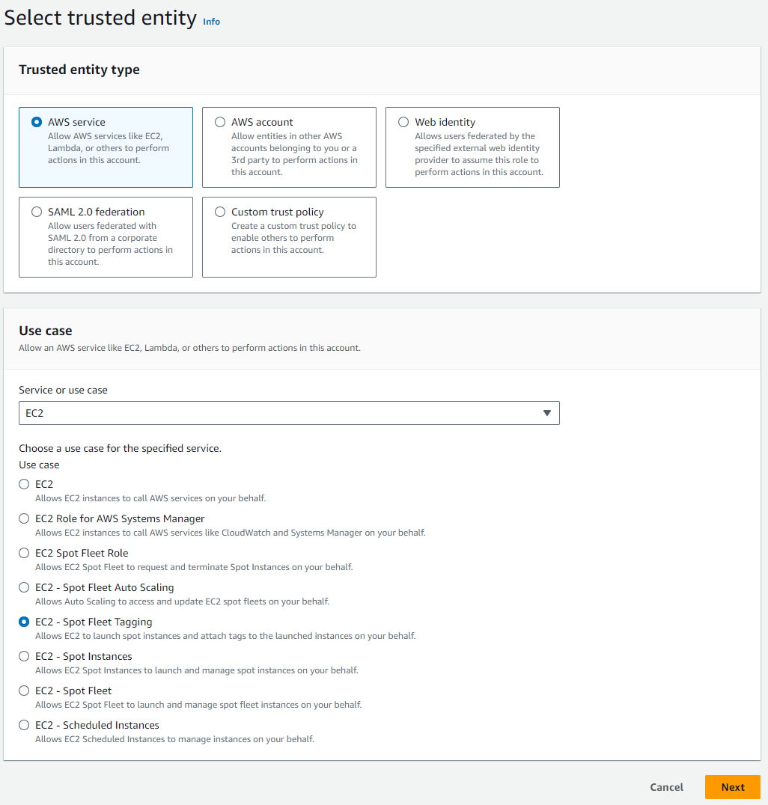
Click Next again and then add an appropriate name e.g. AmazonEC2SpotFleetRole and click Create role.
Custom Nextflow AMI 📦
AWS batch uses Amazon Machine Images (AMIs) to initiate EC2 compute instances that will subsequently run your Nextflow processes. Nextflow tasks submitted to AWS Batch will run under the Amazon Elastic Container Service (ECS). ECS (not to be confused with EC2) uses a base Amazon ECS-optimised AMI (with docker pre-installed).
Unlike previous blog posts you no long need to generate AMIs with large EBS storage to hold input data or setup EBS autoscaling as we are going to utilise the new fusion functionality to harness the cheaper S3 object storage as our local compute storage for each process. I would recommend leaving the AMI image with the default base 30GiB EBS so there is sufficient space to hold your containers.
You will also need to install the AWS CLI in the base ECS AMI to allow data movement to and from S3 buckets. To set all this up follow these steps:
Navigate to the EC2 console menu.
Click Instances and then Launch Instances.
Under Quick start click Browse more AMIs.
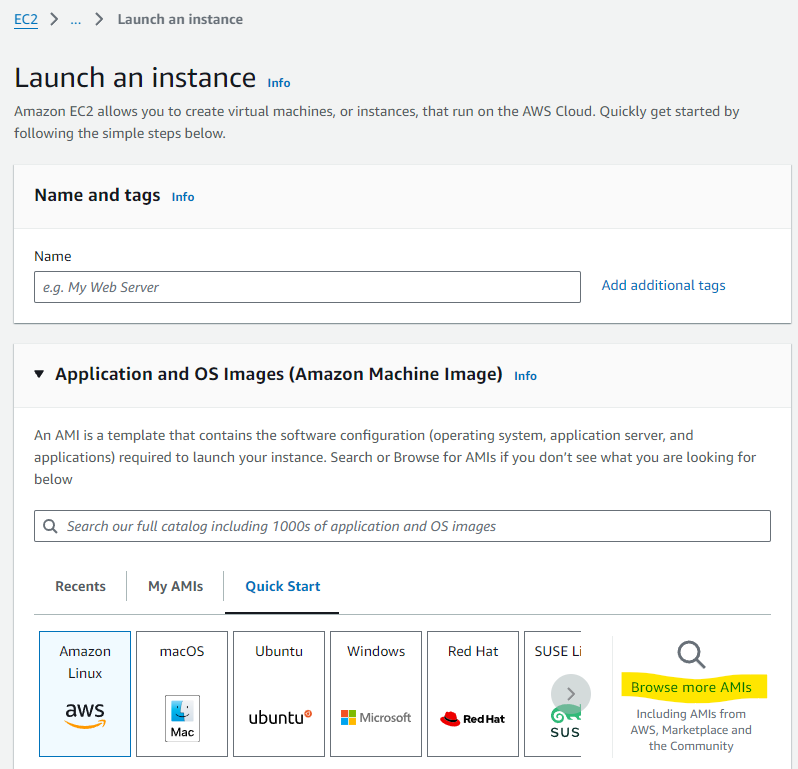
Click AWS Marketplace AMIs and search for ECS
At the time of writing Amazon Linux AMI 2.0.20241023 x86_64 ECS HVM GP2 was the most up-to date. Select it and click Subscribe now (don’t worry the AMI is free, the pricing is the cost of the EC2 instance you choose to launch).
Now in my original post I suggested selecting t2.micro as the instance type, however since then I have had issues during the subsequent conda setup running out of memory so I would now recommend you select something cheap with 4GiB of RAM, such as t3.medium.
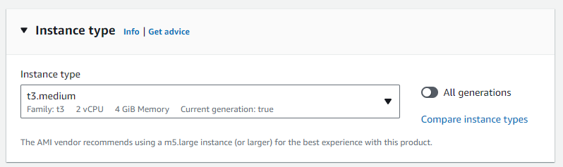
Select and relevant key pair and network settings based on your setup (I would recommend at a minimum a private VPC and IP-restricted connections via a bastion/jump instance).
NoteThe key pair should be for your normal IAM user account, not the Nextflow IAM you created earlier, as you will need to SSH into this instance and run some commands to complete the setup.
Ensure you have the default 30GiB EBS storage 💾 listed under ‘Configure storage’. Also change the storage type from gp2 to gp3 (for a performance boost at no additional cost - see Matt Vaughn’s NextflowSummit 2022 talk 📽️).
Click Launch instance 🚀
SSH 💻 into your new instance where you will need to install AWS CLI.
Once connected run the following commands to install AWS CLI using miniconda (as per the Nextflow documentation).
cd $HOME sudo yum install -y bzip2 wget wget https://repo.continuum.io/miniconda/Miniconda3-latest-Linux-x86_64.sh bash Miniconda3-latest-Linux-x86_64.sh -b -f -p $HOME/miniconda $HOME/miniconda/bin/conda install -c conda-forge -y awscli rm Miniconda3-latest-Linux-x86_64.shTo verify the install was successful
$ ./miniconda/bin/aws --version aws-cli/1.19.79 Python/3.8.5 Linux/4.14.231-173.361.amzn2.x86_64 botocore/1.20.79Under the Instances menu in the EC2 console select your relevant instance and click Actions, then Images and Templates, then Create Image.
Give your new image a name e.g. nextflow-30GiB-ecs-ami and click Create image.
📝Take note of the AMI ID (not the name) that you just generated as you will need this later.
Contrary to what is commonly written in other documentation you no longer need to expand your docker 🐋storage volume to match your allocated EBS storage size. The docker storage automatically expands on the Amazon 2 AMIs which are now default (unlike previous Amazon 1 AMIs).
Batch Environment 🎛️
Now it is time to create your Batch environment which entails at least one compute environment and one job queue that Nextflow will submit processes to.
Navigate to the Batch AWS console and click on Compute environments.
Click Create and select Amazon Elastic Compute Cloud (Amazon EC2) as the compute environment.
Select Managed as the orchestration type and enter a suitable name for your new compute environment.
If this is your first time setting up a Batch environment AWS will create the relevant service role and instance role. Just ensure Create new role is selected. Alternatively, under ‘Service role’ select AWSServiceRoleForBatch and under ‘Instance Role’ select ecsInstanceRole. Click Next.
Leave Minimum and Desired vCPUs as 0. Maximum vCPUs controls the allowed maximum number of parallel vCPU tasks that can run in your compute environment at any one time. Increase or decrease this to an appropriate number based on your requirements.
‘Allowed instance type’ allows you to control the type of instances that AWS is allowed to try and run your jobs on. Your CPU and memory requirements defined in your Nextflow config will apply a second tier of filtering (i.e. if your memory request is higher than an allowed instance type, obviously that instance type won’t be used). You can leave this as optimal and AWS will attempt to find the best instance type match to your CPU and memory request.
NoteAWS will generally group multiple jobs onto the one large instance, however, this can result in errors, particularly from ‘noisy neighbors’, and I/O and/or network intensive tasks.
If you want to prevent AWS from grouping multiple jobs onto the one larger instance, then you need to specifically define smaller instances types, e.g. r6i.xlarge, r6i.2xlarge, to prevent AWS using super instances such as r6i.24xlarge r6i.32xlarge.
I have also found that when using SPOT instances AWS is less likely to group lots of jobs onto the super sizes instances. Another reason to use SPOT 😉
To use spot instances toggle the Use EC2 Spot instances button at the top and define your maximum cut-off for on-demand price under ‘Maximum % on-demand price’. Under ‘spot fleet role’ you will also need to select the AmazonEC2SpotFleetRole role that you created earlier.
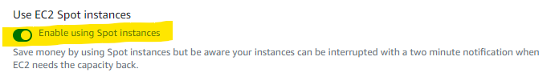
Under ‘Additional configuration’ you can define the allocation strategy.
BEST_FIT(default) AWS Batch selects an instance type that best fits the needs of the jobs with a preference for the lowest-cost instance type. If additional instances of the selected instance type aren’t available, AWS Batch waits for the additional instances to be available. If there aren’t enough instances available, or if the user is reaching the Amazon EC2 service quotas, then additional jobs don’t run until currently running jobs are complete. This allocation strategy keeps costs lower but can limit scaling. If you’re using Spot Fleets withBEST_FIT, the Spot Fleet IAM Role must be specified.BEST_FITisn’t supported when updating compute environments. For more information, see Updating compute environments.BEST_FIT_PROGRESSIVEAWS Batch selects additional instance types that are large enough to meet the requirements of the jobs in the queue. Instance types with a lower cost for each unit vCPU are preferred. If additional instances of the previously selected instance types aren’t available, AWS Batch selects new instance types.SPOT_CAPACITY_OPTIMIZEDAWS Batch selects one or more instance types that are large enough to meet the requirements of the jobs in the queue. Instance types that are less likely to be interrupted are preferred. This allocation strategy is only available for Spot Instance compute resources.Under ‘EC2 configuration’ click Add EC2 configuration and select Amazon Linux 2 as the image type and paste the AMI ID that you created earlier in the Image ID override field.
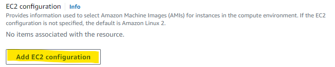
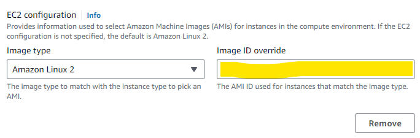
Click Next and enter the appropriate network configuration for your VPC.
Click Next, check your settings and then click Create compute environment.
Still within the Batch AWS console and click on Job queues.
- Click Create and select ‘Amazon Elastic Compute Cloud (Amazon EC2)’ as the compute environment.
- Enter a suitable name for your new job queue (📝 take note of this name you will need it later)
- Under ‘Connected compute environments’ select the compute environment that you just created
- Click Create job queue.
You will want Nextflow to use an S3 bucket to store all the working files and results rather than a local connection.
- Navigate to the S3 service under the AWS management console and create a new private bucket in your relevant region.
- Create a new folder within the bucket to serve as the Nextflow working directory (📝 take note of the S3 URI address as you will need this next)
Nextflow Config & Launchpad 🚀
Now all you now need to do is set up your Nextflow config with the relevant details of your AWS setup. An example of an initial config file is:
nextflow.config
//Select the awsbatch executor
process.executor = 'awsbatch'
//Name of the AWS Batch job queue that you just created
process.queue = 'my-batch-queue'
//region where we want to run this in
aws.region = 'ap-southeast-2'
//Path to the aws cli tool you installed in your AMI
aws.batch.cliPath = '/home/ec2-user/miniconda/bin/aws'
//S3 working directory that you just created
workDir = 's3://bucket_you_created/work/'You will need to include this config with all the Nextflow pipelines you intend to run on your new AWS setup.
The next step is to create, what I like you call your nf-launchpad - i.e. a EC2 instance that you submit/run your Nextflow pipelines from and that essentially runs all the communication with AWS Batch. You could do this locally, but this doesn’t provide you any protection against power or internet disconnects.
Navigate to the Instances within the EC2 console and click Launch instances.
Add an appropriate name, e.g. nf-launchpad
Select a linux 🐧 based AMI, I typically just go for Ubuntu under the Quick Start tab.
Under instance type choose a small to medium instance type. Generally you don’t need too much grunt here as Batch runs all the processes. Initially I started using a t2.micro instance, which worked flawlessly for a good innings, however as I started to scale up the intensity of my pipelines and the number of parallel process and data movement, it started to get too much for the little mighty t2.micro. So now I run something like a r6a.large.
Select and relevant key pair and network settings based on your setup (I would recommend at a minimum a private VPC and IP-restricted connections via a bastion/jump instance).
Note- The key pair should be for your normal IAM user account, not the nextflow IAM you created earlier, as you will need to SSH into this instance and to run your Nextflow pipelines.
Ensure you have the default 30GiB EBS storage 💾 listed under ‘Configure storage’. Also change the storage type from gp2 to gp3 (for a performance boost at no additional cost - see Matt Vaughn’s NextflowSummit 2022 talk 📽️).
NoteS3 is used as the working directory, so you don’t need too much storage space attached to your nf-launchpad.
Click Launch instance 🚀
SSH 💻 into your new instance where you will need to install AWS CLI
You can install the AWS CLI using the AWS documented method rather then the miniconda method we used earlier.
curl "https://awscli.amazonaws.com/awscli-exe-linux-x86_64.zip" -o "awscliv2.zip" unzip awscliv2.zip sudo ./aws/installThe last step is setting up your security credentials 🔐 to allow Nextflow to securely communicate and submit jobs to AWS batch. After you have installed the AWS CLI run
aws configureand enter the relevant Key ID, Access Key, and Region when prompted. These are the keys that AWS provided when you generated your Nextflow programmatic user at the start of this guide.
DO NOT store your credentials in your Nextflow configuration file as some tutorials suggest.
Additional Notes 🗒️
AWS batch jobs can take a few minutes to spin up, be patient before assuming you have set something up wrong.
If you are using spot instances and your maximum % on-demand price is set too low your jobs make take a long time to start or may not run at all.
You can view the log stream of your jobs by clicking through the ‘Running’ job numbers in the Batch dashboard and clicking the Log stream name - helpful to determine where a job is up to in a script
The Nextflow slack channel is a great place to raise any questions if you are still experiencing issues after following this setup guide, or want to experiment with some more advanced configurations and setups.
Fusion storage 💾
You finally made it 🥳 to the actual bit your probably opened this blog post for - how do I tell Nextflow to use the fusion file storage system so I no longer need to rely on EBS auto-scaling? Well its actually ridiculously simply add fusion.enabled = true and wave.enabled = true to you Nextflow config, for example 👇
nextflow.config
//Select the awsbatch executor
process.executor = 'awsbatch'
//Name of the AWS Batch job queue that you just created
process.queue = 'my-batch-queue'
//region where we want to run this in
aws.region = 'ap-southeast-2'
//Path to the aws cli tool you installed in your AMI
aws.batch.cliPath = '/home/ec2-user/miniconda/bin/aws'
//S3 working directory that you just created
workDir = 's3://bucket_you_created/work/'
//spot instance retries
aws.batch.maxSpotAttempts = 3
//fusion and wave configuration
fusion.enabled = true
wave.enabled = true
//per process configurations
process {
withName: 'GEN_FILE' {
container = 'public.ecr.aws/ubuntu/ubuntu:24.04_stable'
cpus = 1
memory = 4.GB
}
}There is no requirement to use Seqera containers, you can continue to use biocontainers hosted on AWS ECR, Wave just steps in to provision them with the Fusion layer attached. However, I would recommend checking out the free Seqera container service, the ability to seamlessly create multitooled containers and also ARM based containers is brilliant! Not to mention the interface is a lot better (IMO) 🤩 than any other container repository out there.
Ok, lets test everything is working, take this demo pipeline that I have made below and run it firstly without fusion and wave enabled (i.e. fusion.enabled = false & wave.enabled = false), it should eventually fail.
main.nf
#!/usr/bin/env nextflow
// Define a list of file sizes in GiB (e.g., 1GiB, 20GiB, 50GiB)
params.file_sizes = [1, 20, 50]
// Process to create files of specified sizes
process GEN_FILE {
input:
val size
output:
file("file_${size}G.dat")
script:
"""
dd if=/dev/zero of=file_${size}G.dat bs=1G count=${size}
"""
}
workflow {
// Channel for file sizes
Channel
.from(params.file_sizes)
.set { file_size_ch }
GEN_FILE(file_size_ch)
GEN_FILE.out.view { file -> "File: ${file}" }
}Example of failed run 👇
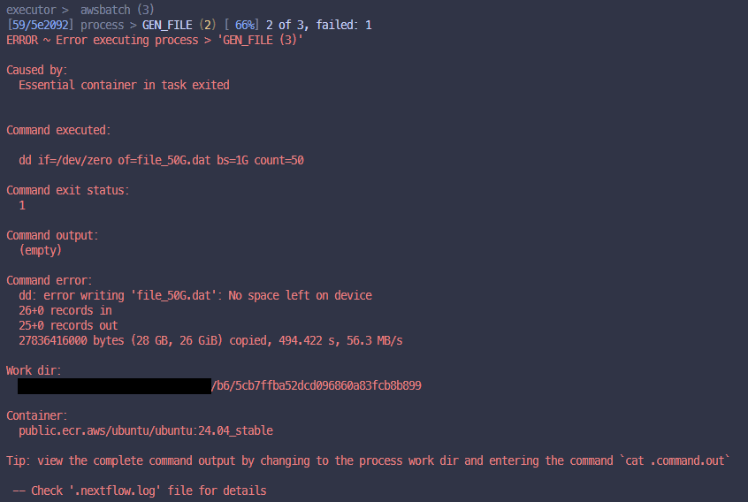
Now enable Fusion and Wave in your config and run it again, and it should work, if everything has been setup correctly.
Example of successful run (notice the fusion enabled label against the executor) 👇
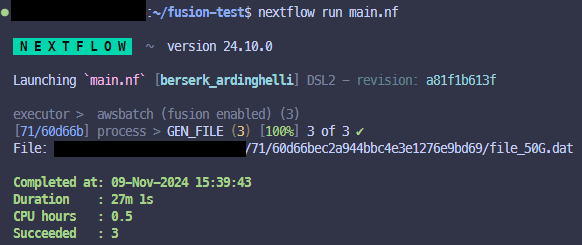
So what is happening in the pipeline 👆 you ask? Well it has just one process that runs 3 times in parallel, and within the process it will try to generate a file that is either, 1GiB, 20GiB or 50GiB in size. As the Nextflow AMI you generated only has 30GiB of storage attached the 50GiB file generation process should fail unless fusion is enabled in which case it can then use S3 as the local storage.
Just a nice simple example to test everything is working before you dive into your bigger pipelines.
Hopefully everything worked, if so time to party!
If not, don’t give up, read back over this guide and see if there was something you missed or find me on the Nextflow Slack channel for help.